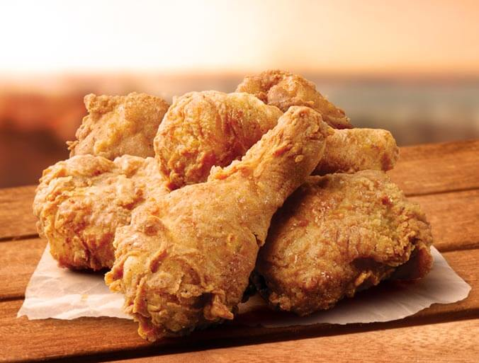

KFC

Description
The KFC Secret Recipe... Or is it?
Ingredients
- 2 cups all-purpose flour
- 2/3 table spoon salt
- 1/2 table spoon dried thyme leaves
- 1/2 table spoon dried basil leaves
- 1/3 table spoon dried oregano leaves
- 1 table spoon celery salt
- 1 table spoon ground black pepper
- 1 table spoon dried mustard
- 4 table spoons paprika
- 2 table spoons garlic salt
- 1 table spoon ground ginger
- 3 table spoons ground white pepper
- 1 cup buttermilk
- 1 egg, beaten
- 1 chicken, cut up, the breast pieces cut in half for more even frying
- Expeller-pressed canola oil
Steps
- Mix the flour in a bowl with all the herbs and spices; set aside.
- Mix the buttermilk and egg together in a separate bowl until combined. Soak the chicken in the buttermilk mixture at room temperature, 20-30 minutes.
- Remove chicken from the buttermilk, allowing excess to drip off. Dip the chicken pieces in the herb-spice-flour mixture to coat all sides, shaking off excess. Allow to sit on a rack over a baking sheet, 20 minutes.
- Meanwhile, heat about 3 inches of the oil in a large Dutch oven (or similar heavy pot with high sides) over medium-high heat to 350 degrees. (Use a deep-frying thermometer to check the temperature.) When temperature is reached, lower the heat to medium to maintain it at 350. Fry 3 or 4 pieces at a time, being careful not to crowd the pot. Fry until medium golden brown, turning once, 15-18 minutes. Transfer chicken pieces to a baking sheet covered with paper towels. Allow the oil to return to temperature before adding more chicken. Repeat with remaining chicken.